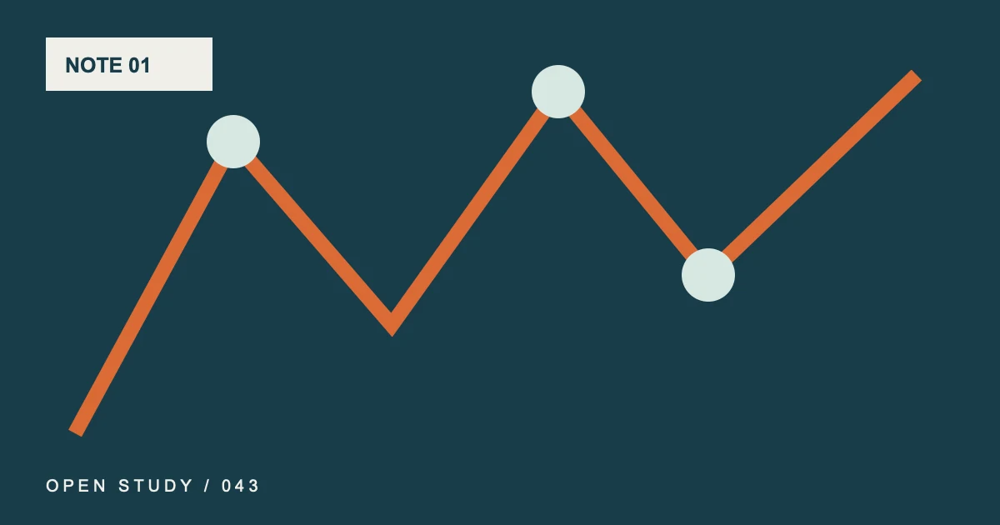

N.01现场观测 / transect
~SHADE_TEMPERATURE_TITLE~
~SHADE_TEMPERATURE_DECK~
- 作者
- ~AUTHOR_NAME~
- 发布
- ~PUBLISHED_DATE~
- 复核
- ~VERIFIED_DATE~

~SHADE_TEMPERATURE_COVER_CAPTION~~TRANSECT_POINT_1~~TRANSECT_VALUE_1~~TRANSECT_POINT_2~~TRANSECT_VALUE_2~~TRANSECT_POINT_3~~TRANSECT_VALUE_3~~TRANSECT_POINT_4~~TRANSECT_VALUE_4~~TRANSECT_POINT_5~~TRANSECT_VALUE_5~
~SHADE_TEMPERATURE_OPENING~
01 / ~SHADE_TEMPERATURE_SECTION_1_KICKER~~SHADE_TEMPERATURE_SECTION_1_TITLE~
~SHADE_TEMPERATURE_SECTION_1_BODY_1~
~SHADE_TEMPERATURE_SECTION_1_BODY_2~
02 / ~SHADE_TEMPERATURE_SECTION_2_KICKER~~SHADE_TEMPERATURE_SECTION_2_TITLE~
~SHADE_TEMPERATURE_SECTION_2_BODY_1~
~SHADE_TEMPERATURE_SECTION_2_QUOTE~
~SHADE_TEMPERATURE_SECTION_2_BODY_2~
03 / ~SHADE_TEMPERATURE_SECTION_3_KICKER~~SHADE_TEMPERATURE_SECTION_3_TITLE~
~SHADE_TEMPERATURE_SECTION_3_BODY_1~
~SHADE_TEMPERATURE_SECTION_3_BODY_2~
04 / ~SHADE_TEMPERATURE_SECTION_4_KICKER~~SHADE_TEMPERATURE_SECTION_4_TITLE~
~SHADE_TEMPERATURE_SECTION_4_BODY_1~
~SHADE_TEMPERATURE_SECTION_4_BODY_2~